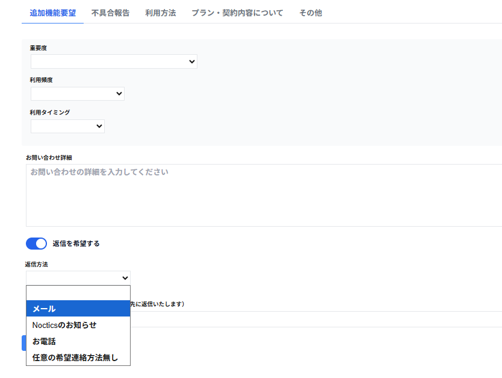

・お問い合わせ詳細
お問い合わせの詳細を入力します。
※品質向上とスムーズなご対応のため、できるだけ具体的に記載されますようお願いいたします。
・返信を希望する
返信を希望する場合は、返信を希望するを選択します。
・返信方法(セレクトボックス、初期値は空白)をクリックすると以下の項目を選択できます。
※返信を希望しない場合は返信方法は表示されません。
・メール
返信方法にメールを希望する場合はメールを選択します。
返信方法にNocticsのお知らせを希望する場合はNocticsのお知らせを選択します。
・お電話
返信方法にお電話を希望する場合はお電話を選択します。
・任意の希望連絡方法無し
任意の希望連絡方法が無い場合は任意の希望連絡方法無しを選択します。
・連絡先（未入力の場合は店舗情報の連絡先に返信いたします）
※返信を希望しない場合は連絡先は表示されません。
返信を希望するメールアドレスを入力します。入力したメールアドレス宛に、運営からの返信が送信されます。
未入力の場合は店舗情報の連絡先に返信いたします。
・確認
お問い合わせ内容の確認の画面が表示されます。
